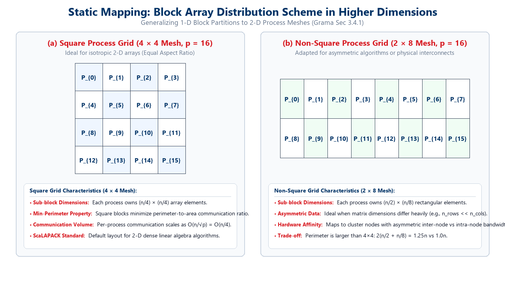
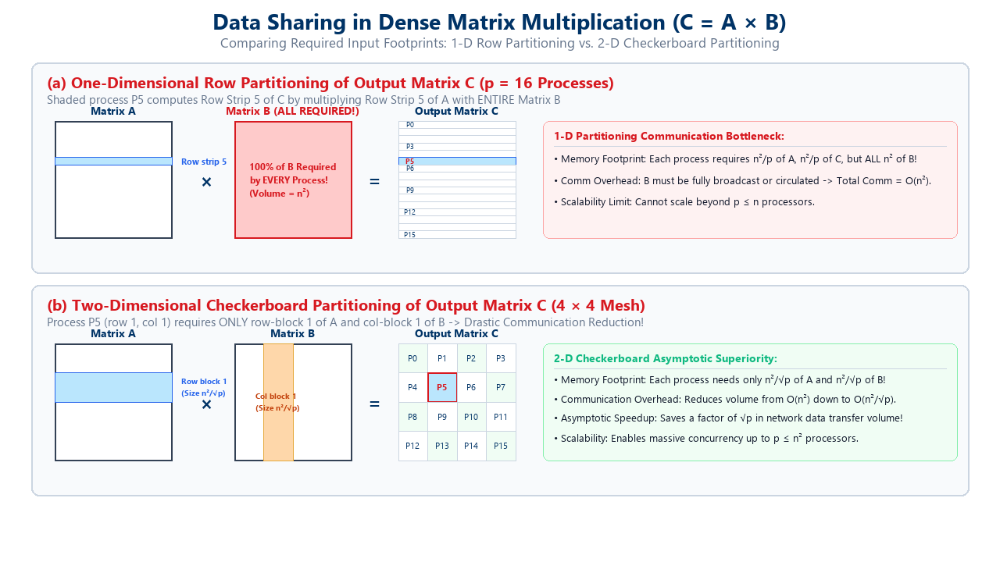
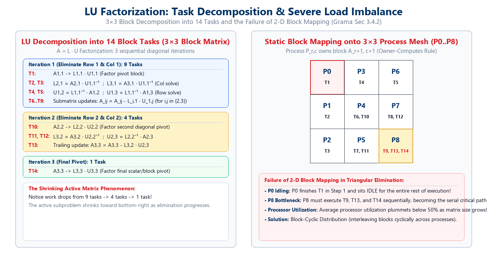
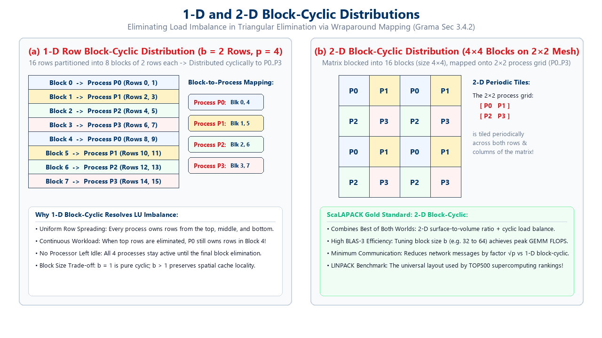
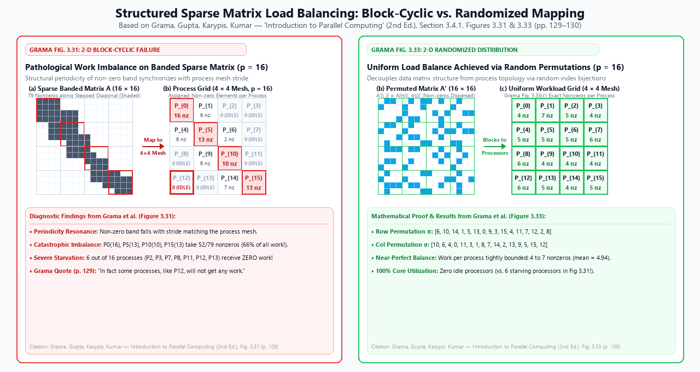
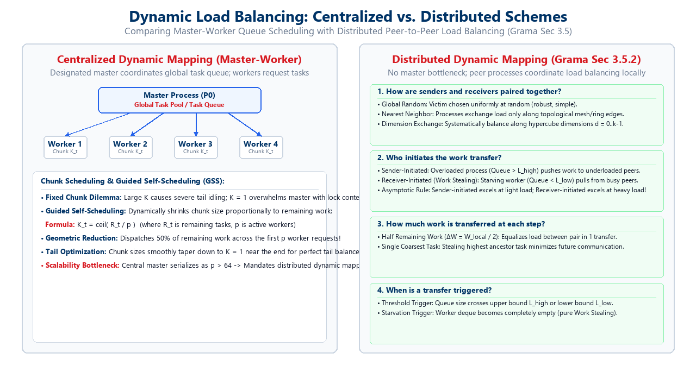

Principles of Parallel Algorithm Design: Advanced Process Mapping & Dynamic Load Balancing
Lecture Outline
- Higher-Dimensional Block Distributions:
- Extending 1-D block arrays to 2-D matrices and 3-D grids.
- Square (\(p_r = p_c\)) vs. Rectangular (\(p_r \ne p_c\)) process meshes.
- Scalability limit relaxation (\(p \le n\) vs. \(p \le n^2\)).
- Data Sharing in Dense Matrix Multiplication:
- Partitioning output matrix \(C = A \times B\) via block mapping.
- 1-D row decomposition: \(O(n^2)\) communication & memory bottleneck.
- 2-D checkerboard decomposition: \(O(n^2/\sqrt{p})\) surface-to-volume ratio.
- Dense LU Factorization & Load Imbalance:
- Gaussian elimination without pivoting on a \(3 \times 3\) block matrix.
- The 14 canonical sub-tasks (factorizations, solves, updates).
- The fatal flaw of 2-D block distribution: Active submatrix shrinkage.
- Processor idling timeline: \(P_0\) starvation vs. \(P_8\) bottleneck.
- Block-Cyclic Distributions:
- Over-decomposition into micro-blocks of size \(b \times b\).
- 1-D and 2-D round-robin tile assignment.
- ScaLAPACK tuning: BLAS-3 cache locality + cyclic load balance.
- Structured Sparse Matrices & Randomization:
- Periodicity pathology: Banded diagonals aligning with process grid.
- Randomized row and column permutations (\(\pi, \sigma\)).
- Restoring statistical uniformity without destroying indexing.
- Dynamic Mapping & Dynamic Load Balancing:
- Centralized Master-Worker model & scheduling overhead.
- Chunk Scheduling & Guided Self-Scheduling (GSS: \(K_t = \lceil R_t / p \rceil\)).
- Distributed dynamic schemes: The 4 Critical Questions.
- Work Stealing deques: LIFO local execution vs. FIFO remote stealing.
- Academic References:
- Foundational textbooks and seminal research papers.
Static Mapping: Higher-Dimensional Block Distributions
In Lecture 18, we partitioned arrays along a single dimension (1-D row or column striping). We can generalize block distribution to higher dimensions:
Generalizing to 2-D and 3-D
- Instead of mapping to a 1-D array of processes, we arrange the \(p\) virtual processes into a multi-dimensional logical mesh: \[p = p_r \times p_c \quad \text{(for 2-D)}\]
- An \(n \times n\) dense matrix is partitioned into \(p_r \times p_c\) rectangular sub-blocks: \[\text{Block Dimensions: } \left(\frac{n}{p_r}\right) \times \left(\frac{n}{p_c}\right)\]
- Each process \(P_{i,j}\) owns a dedicated sub-block of the matrix: \[A_{i,j} \iff P_{i,j} = P_{i \cdot p_c + j}\]
Why Higher Dimensions Matter
- Dramatic Scalability Expansion:
- 1-D partitioning limits parallel concurrency to \(p \le n\).
- 2-D block partitioning allows scaling up to \(p \le n^2\) processes!
- Aspect Ratio Flexibility:
- Square Grids (\(\sqrt{p} \times \sqrt{p}\)): Ideal when communication must be symmetric along rows and columns.
- Rectangular Grids (\(p_r \times p_c\)): Preferred when row operations differ fundamentally in cost or frequency from column operations.
Reference Principle (Grama Sec 3.4.1): Higher-dimensional data decomposition allows the use of significantly larger process counts while maintaining balanced sub-blocks and minimizing per-process memory footprints.
Visualizing Higher-Dimensional Block Mapping
Comparing a Square Process Grid (\(4 \times 4\)) with a Rectangular Process Grid (\(2 \times 8\)) for \(p = 16\):

Coordinate Mapping in Multi-Dimensional Process Grids
Converting between 2-D array coordinates and 1-D linearized process ranks:
2-D Index Mapping Formula
- For an \(n \times n\) matrix distributed on a \(p_r \times p_c\) process grid: \[\text{Row Process: } \quad i = \left\lfloor \frac{r}{n / p_r} \right\rfloor\] \[\text{Col Process: } \quad j = \left\lfloor \frac{c}{n / p_c} \right\rfloor\]
- Linearized Process Rank (Row-Major): \[\text{Rank}(P_{i,j}) = i \cdot p_c + j\]
- Local array offsets inside process \(P_{i,j}\): \[r_{\text{local}} = r \pmod{n / p_r}, \quad c_{\text{local}} = c \pmod{n / p_c}\]
Grid Geometry & Communication Perimeter
- The perimeter of a sub-block governs its message exchange surface area: \[\text{Perimeter} = 2 \cdot \left( \frac{n}{p_r} + \frac{n}{p_c} \right)\]
- Square Grid Minimization:
- When \(p_r = p_c = \sqrt{p}\), the sub-block is square: \[\text{Perimeter}_{\min} = 4 \cdot \frac{n}{\sqrt{p}}\]
- A square geometry strictly minimizes the surface-to-volume ratio, cutting communication overhead to its theoretical minimum!
Design Rule: Use a square process mesh (\(\sqrt{p} \times \sqrt{p}\)) whenever algorithms require symmetric horizontal and vertical communication (e.g., Cannon’s or Fox’s matrix multiplication).
Data Sharing in Dense Matrix Multiplication (\(C = A \times B\))
Consider computing \(C = A \times B\) for two dense \(n \times n\) matrices using block decomposition:
Task Granularity & Output Partitioning
- Each element \(C_{i,j}\) requires evaluating an inner product of length \(n\): \[C_{i,j} = \sum_{k=0}^{n-1} A_{i,k} \cdot B_{k,j}\]
- Total computational work: \(2n^3\) floating-point operations.
- By assigning equal numbers of elements of \(C\) to each process (the Owner-Computes Rule), computational workload is perfectly balanced.
- The Core Dilemma: Which decomposition of \(C\) (1-D or 2-D) minimizes communication overhead?
Input Data Sharing Requirements
- To compute a specific block of \(C\), a process requires:
- The corresponding horizontal rows of \(A\).
- The corresponding vertical columns of \(B\).
- Because multiple processes compute blocks sharing rows or columns:
- Elements of \(A\) and \(B\) must be shared or replicated across processes.
- The choice of 1-D vs. 2-D partitioning fundamentally dictates how much data must be transferred across the network!
Key Takeaway: The choice of precise decomposition (1-D vs. 2-D) is dictated entirely by the associated communication overhead and memory footprint, not by computational load balance!
Visualizing Data Footprints: 1-D vs. 2-D Partitioning
Shaded portions of input matrices \(A\) and \(B\) required by the process computing the shaded block of \(C\):

Mathematical Analysis: Why 2-D Partitioning Wins
Comparing memory requirements and communication volumes for computing \(C = A \times B\) across \(p\) processes:
1-D Row-Striped Partitioning
- Process \(P_i\) owns a horizontal strip of \(C\) of size \((n/p) \times n\).
- Required Data Footprint:
- From \(A\): Strip \((n/p) \times n \implies \frac{n^2}{p}\) elements.
- From \(B\): The entire matrix \(B\) (\(n \times n\)) \(\implies n^2\) elements!
- Catastrophic Bottlenecks:
- Memory Explosion: Every process must store all \(n^2\) entries of \(B\).
- Communication Overhead: Matrix \(B\) must be completely broadcast across all cores (\(O(n^2)\) network traffic).
- Concurrency Ceiling: \(p \le n\).
2-D Checkerboard Partitioning
- Process \(P_{i,j}\) owns a sub-block of \(C\) of size \((n/\sqrt{p}) \times (n/\sqrt{p})\).
- Required Data Footprint:
- From \(A\): Row-block of size \((n/\sqrt{p}) \times n \implies \frac{n^2}{\sqrt{p}}\) elements.
- From \(B\): Column-block of size \(n \times (n/\sqrt{p}) \implies \frac{n^2}{\sqrt{p}}\) elements.
- Architectural Advantages:
- Memory Reduction: Footprint drops from \(n^2\) to \(\frac{n^2}{\sqrt{p}}\), a reduction by factor \(\sqrt{p}\)!
- Communication Efficiency: Sub-blocks circulate only among processes in the same row or column.
- Massive Scalability: Concurrency scales up to \(p \le n^2\).
Surface-to-Volume Theorem: 2-D checkerboard partitioning reduces the data communication footprint per process by a factor of \(\sqrt{p}\), enabling linear scaling on supercomputers with thousands of cores!
When Block Decompositions Fail: Non-Uniform Computations
Block decomposition works exceptionally well when every data item requires identical computation:
The Uniformity Assumption
- Matrix multiplication, Jacobi stencils, and image convolutions exhibit uniform work distribution:
- Every element \(C_{i,j}\) requires exactly \(n\) multiply-add operations.
- Assigning equal block areas yields identical computational workloads.
Non-Uniform Workloads
- In many critical scientific algorithms, the amount of computation associated with data items varies drastically:
- Sub-blocks at different coordinates require different amounts of work.
- As computation progresses, the active problem domain shrinks!
- Consequence: Under standard block mapping, some processes run out of work almost immediately and sit idle, while others choke on heavy workloads!
Canonical Case Study: Dense Gaussian elimination and LU Factorization of dense matrices exhibit severe, progressive computational shrinkage that completely breaks standard 2-D block distributions!
LU Factorization: Block Formulation & Step 1 Tasks (\(T_1..T_5\))
Consider factoring an \(n \times n\) matrix \(A\) into triangular factors \(A = L \cdot U\) partitioned into a \(3 \times 3\) grid of submatrices:
\[\begin{bmatrix} A_{1,1} & A_{1,2} & A_{1,3} \\ A_{2,1} & A_{2,2} & A_{2,3} \\ A_{3,1} & A_{3,2} & A_{3,3} \end{bmatrix} = \begin{bmatrix} L_{1,1} & 0 & 0 \\ L_{2,1} & L_{2,2} & 0 \\ L_{3,1} & L_{3,2} & L_{3,3} \end{bmatrix} \begin{bmatrix} U_{1,1} & U_{1,2} & U_{1,3} \\ 0 & U_{2,2} & U_{2,3} \\ 0 & 0 & U_{3,3} \end{bmatrix}\]
Task 1: Diagonal Pivot Factorization
- Task \(T_1\): Perform LU factorization on the top-left submatrix: \[A_{1,1} = L_{1,1} \cdot U_{1,1}\]
- Yields the foundational diagonal factors \(L_{1,1}\) and \(U_{1,1}\).
- Must complete first before any other task can proceed (Critical Path root).
Tasks 2..5: Triangular System Solves
- Column Solves (Solve with \(U_{1,1}^{-1}\)):
- Task \(T_2\): \(L_{2,1} = A_{2,1} \cdot U_{1,1}^{-1}\)
- Task \(T_3\): \(L_{3,1} = A_{3,1} \cdot U_{1,1}^{-1}\)
- Row Solves (Solve with \(L_{1,1}^{-1}\)):
- Task \(T_4\): \(U_{1,2} = L_{1,1}^{-1} \cdot A_{1,2}\)
- Task \(T_5\): \(U_{1,3} = L_{1,1}^{-1} \cdot A_{1,3}\)
Observation: Tasks \(T_2, T_3, T_4, T_5\) are mutually independent and can execute concurrently the instant Task \(T_1\) completes!
LU Factorization: Trailing Submatrix Updates (\(T_6..T_{14}\))
Once Step 1 completes, the trailing \(2 \times 2\) submatrix is updated (Schur complement) and recursively factored:
Step 2: Schur Complement Updates
- Four independent rank-1 matrix updates:
- Task \(T_6\): \(A_{2,2} \leftarrow A_{2,2} - L_{2,1} \cdot U_{1,2}\)
- Task \(T_7\): \(A_{3,2} \leftarrow A_{3,2} - L_{3,1} \cdot U_{1,2}\)
- Task \(T_8\): \(A_{2,3} \leftarrow A_{2,3} - L_{2,1} \cdot U_{1,3}\)
- Task \(T_9\): \(A_{3,3} \leftarrow A_{3,3} - L_{3,1} \cdot U_{1,3}\)
- Notice that all 4 updates require outputs from Step 1!
Step 3: Trailing Factorization & Completion
- Task \(T_{10}\): Factor 2nd pivot \(A_{2,2} = L_{2,2} \cdot U_{2,2}\)
- Tasks \(T_{11}, T_{12}\): Triangular solves:
- \(T_{11}: L_{3,2} = A_{3,2} \cdot U_{2,2}^{-1}\)
- \(T_{12}: U_{2,3} = L_{2,2}^{-1} \cdot A_{2,3}\)
- Task \(T_{13}\): Trailing update:
- \(A_{3,3} \leftarrow A_{3,3} - L_{3,2} \cdot U_{2,3}\)
- Task \(T_{14}\): Factor final pivot \(A_{3,3} = L_{3,3} \cdot U_{3,3}\)
14 Tasks Total: Notice the progressive shrinkage of active tasks: Step 1 generates 9 tasks (\(T_1..T_9\)), Step 2 generates 4 tasks (\(T_{10}..T_{13}\)), and Step 3 leaves only 1 task (\(T_{14}\))!
Visualizing LU Factorization & Process Idling
A \(3 \times 3\) block LU decomposition mapped to a \(3 \times 3\) process mesh (\(P_0..P_8\)):

Pathology of Pure Block Mapping in LU Factorization
Why mapping \(A_{i,j} \to P_{i,j}\) leads to massive processor starvation:
Process Assignment Table
- Process \(P_0\): Executes ONLY Task 1 (\(A_{1,1} = L_{1,1} U_{1,1}\)).
- As soon as Step 1 finishes, \(P_0\) has zero tasks for the remainder of the algorithm!
- Idling Duration: Sits idle for Steps 2 and 3!
- Processes \(P_1, P_2, P_3, P_6\):
- Execute only Step 1 column/row solves.
- Sits completely idle during Steps 2 and 3!
- Process \(P_8\):
- Must execute \(T_9\) (Step 1), \(T_{13}\) (Step 2), and \(T_{14}\) (Step 3).
- Runs continuously while almost all other cores are dead!
Asymptotic Efficiency Collapse
- As matrix dimension \(n \to \infty\) with \(p\) processes under block distribution:
- After step \(k\), an active submatrix of dimension \((n - k) \times (n - k)\) remains.
- Top-left processes become permanently idle.
- When \(k = n/2\), 75% of the processors are completely idle!
- Parallel Efficiency: \[\text{Efficiency } E \le \frac{1}{3} \approx 33\%\]
- Two-thirds of all available processor cycles are utterly wasted!
The Root Cause: In pure block distribution, each process owns only one contiguous geographic region. When the active computational frontier sweeps past that region, the process starves!
Block-Cyclic Distribution: The Universal Solution
To eliminate the idling and workload shrinkage problem, we introduce Block-Cyclic Distribution:
The Core Philosophy
- Over-Decomposition:
- Partition the array into far more blocks than the number of available processes: \[\text{Number of Blocks } M \gg p\]
- Round-Robin Interleaving:
- Assign blocks to processes in cyclic (round-robin) order.
- Each process receives a collection of non-adjacent, interleaved blocks spread across the entire matrix!
- Continuous Participation:
- Because every process owns blocks in all parts of the matrix, all processes remain actively engaged until the final step!
Tuning Block Size \(b\)
- The block size \(b\) is a tunable parameter that controls the trade-off:
- \(b = 1\) (Pure Cyclic Distribution):
- Maximum load balancing: Each process gets individual rows or columns.
- Poor data locality: Destroys cache reuse and increases message count.
- \(b = n/p\) (Pure Block Distribution):
- High spatial locality, but catastrophic load imbalance.
- Optimal \(b \in [16, 64]\) (Block-Cyclic):
- Balances high cache BLAS-3 performance with near-perfect load balance!
- \(b = 1\) (Pure Cyclic Distribution):
ScaLAPACK Definition: Block-cyclic distribution partitions an array into contiguous blocks of size \(b\), and maps block \((I, J)\) to process \((I \pmod{p_r}, J \pmod{p_c})\) on a \(p_r \times p_c\) mesh.
Visualizing 1-D & 2-D Block-Cyclic Layouts
Comparing 1-D Block-Cyclic (\(b=2\) rows on 4 processes) with 2-D Block-Cyclic (\(4 \times 4\) blocks on \(2 \times 2\) mesh):

Why 2-D Block-Cyclic is the Supercomputing Standard
Modern high-performance linear algebra libraries (ScaLAPACK, SLATE, cuSOLVER) universally adopt 2-D Block-Cyclic Distribution:
Synergy of Three Principles
- 2-D Checkerboard Communication:
- Reduces inter-process communication surface area by a factor of \(\sqrt{p}\) compared to 1-D partitioning.
- Cyclic Load Balancing:
- Distributes trailing submatrix shrinkage uniformly across all processes during LU, Cholesky, and QR factorizations.
- BLAS-3 Cache Blocking:
- By choosing block size \(b \approx 32\text{ to }64\), each local block fits in L1/L2 cache, maximizing GEMM (Matrix Multiplication) FLOPS!
Real-World Impact: The TOP500 Benchmark
- The High-Performance LINPACK (HPL) benchmark, which ranks the world’s fastest supercomputers (Frontier, Aurora, Fugaku):
- Solves an enormous dense system \(A x = b\) using LU factorization with partial pivoting.
- Runs exclusively on top of a 2-D block-cyclic layout.
- Without 2-D block-cyclic mapping, scaling to hundreds of thousands of cores would be mathematically impossible!
ScaLAPACK Rule of Thumb: Choose square or near-square process grids (\(p_r \approx p_c\)), with block sizes \(b \in [32, 64]\) to saturate CPU vector registers while preserving load balance.
Disadvantage of Block-Cyclic: Structured Sparse Matrices
Despite its universal success in dense linear algebra, block-cyclic distribution can fail catastrophically on structured sparse matrices:
Where Sparse Banded Matrices Arise
- Numerical solutions of PDEs using Finite Differences, Finite Elements, or Stencil methods:
- 1-D wave equations, 2-D Poisson solvers, spline interpolations.
- Yield banded matrices or stepped diagonal matrices:
- Non-zero coefficients are concentrated exclusively along the main diagonal and a few adjacent sub-diagonals.
- Vast majority of off-diagonal regions are completely zero!
The Periodicity Trap
- Consider a banded sparse matrix mapped onto a \(4 \times 4\) process grid (\(p = 16\)) using block-cyclic distribution:
- Because non-zeros follow the diagonal, they fall with periodic regularity onto the same process indices!
- Processes on the process mesh diagonal (\(P_0, P_5, P_{10}, P_{15}\)) receive 66% of all non-zero entries (52 out of 79)!
- Seven off-diagonal processes (\(P_2, P_3, P_7, P_8, P_{11}, P_{12}, P_{13}\)) receive zero work!
Pathological Failure (Grama Fig. 3.31): The spatial periodicity of the block-cyclic mapping synchronizes with the structural periodicity of the sparse matrix, resulting in massive load imbalance (processes like \(P_{12}\) receive zero work)!
Visualizing Sparse Matrix Periodicity & Randomization
Comparison of Grama Figure 3.31 (Block-Cyclic Failure) vs. Grama Figure 3.33 (2-D Randomized Block Distribution):

Randomized Block-Cyclic Distribution: Mechanics
To break the pathological coupling between matrix structure and process grid periodicity:
The Random Permutation Algorithm
- Generate Pseudo-Random Permutations:
- Generate two independent, uniformly random permutations of indices \(\{0, 1, \dots, n-1\}\): \[\pi: \text{Row permutation}, \quad \sigma: \text{Column permutation}\]
- Virtual Coordinate Translation:
- Instead of storing element \(A(i, j)\) at \((i, j)\), store it at permuted coordinates: \[A'( \pi(i), \sigma(j) ) \leftarrow A(i, j)\]
- Standard Block-Cyclic Mapping:
- Now distribute the randomized matrix \(A'\) using standard 2-D block-cyclic mapping!
Why It Works & Key Guarantees
- Index Integrity Preserved:
- Entries retain their original logical indices \((i, j)\) in metadata; no algebraic equations are altered.
- Statistical Workload Homogenization:
- The clustering of non-zeros along diagonals is shattered and scattered uniformly across all \(p\) sub-blocks!
- By the Law of Large Numbers, each process gets an almost identical count of non-zero entries: \[\mathbb{E}[\text{Non-zeros in } P_k] \approx \frac{\text{Total Non-zeros}}{p}\]
Grama Section 3.4.1 (p. 129–130): Randomized mapping decouples structural data characteristics from geometric process topologies, delivering optimal load balancing without complex dynamic load balancers!
Dynamic Mapping: When Static Mapping Fails
Static mapping requires predictable task generation and execution times before runtime. When does it break down?
Limitations of Static Mapping
- Static schemes cannot adapt when:
- Task Execution Times Vary Unpredictably:
- Mandelbrot set rendering (number of iterations varies wildly per pixel).
- Ray tracing (rays bounce unpredictable numbers of times).
- Tasks are Generated Dynamically at Runtime:
- Game-tree search (\(\alpha\text{-}\beta\) pruning in chess, 15-puzzle).
- Branch-and-bound optimization.
- Hardware is Heterogeneous:
- Clusters with mixed CPU frequencies or shared cloud nodes.
- Task Execution Times Vary Unpredictably:
The Dynamic Mapping Paradigm
- Dynamic Mapping is universally referred to as Dynamic Load Balancing.
- Tasks are allocated to processes at runtime as processors become available.
- Two fundamental architectural classifications:
- Centralized Dynamic Mapping: A master process manages the task pool and assigns work to slave workers.
- Distributed Dynamic Mapping: Work is distributed across all processes; processes exchange work peer-to-peer.
Core Trade-off: Dynamic mapping achieves superior load balance for irregular workloads, but incurs runtime communication overhead for scheduling and task migration.
Centralized Dynamic Mapping: Master-Worker Architectures
In a centralized scheme, one designated process acts as the Master and the remaining \(p-1\) act as Workers (Slaves):
The Master-Worker Protocol
- The Master maintains a centralized Task Queue:
- Worker finishes its current task.
- Worker sends a
REQUEST_WORKmessage to Master. - Master removes a task from queue and sends
TASK_DISPATCH. - Worker executes task and returns result.
- The Scalability Bottleneck:
- As process count \(p\) grows to hundreds of cores, the Master becomes overwhelmed handling requests!
- Workers spend increasing time blocked waiting for responses \(\implies\) Catastrophic queuing delay!
Chunk Scheduling Mitigation
- Chunk Scheduling:
- Instead of dispatching 1 task at a time, the Master dispatches a chunk of \(k\) tasks per request: \[\text{Chunk Size } = k > 1\]
- Reduces master messaging frequency by a factor of \(k\)!
- The Chunk Size Trade-off:
- Large \(k\): Minimal master bottleneck, but near the end of computation, idle workers cannot take tasks locked inside another worker’s chunk \(\implies\) Load Imbalance!
- Small \(k\): Excellent load balance, but Master Bottleneck!
Design Insight: To solve this dilemma, algorithms use self-adaptive schemes that gradually decrease chunk size as computation progresses!
Guided Self-Scheduling (GSS): Adaptive Chunk Sizing
Polychronopoulos & Kuck (1987) introduced Guided Self-Scheduling (GSS) to mathematically resolve the chunk size conflict:
The GSS Mathematical Formulation
- At step \(t\), if \(R_t\) remaining tasks are in the master queue and \(p\) worker processes are active: \[K_t = \left\lceil \frac{R_t}{p} \right\rceil\]
- The requesting worker receives exactly \(K_t\) tasks.
- The remaining tasks are updated: \[R_{t+1} = R_t - K_t = R_t - \left\lceil \frac{R_t}{p} \right\rceil\]
- Dynamic Chunk Trajectory:
- Early phase: Chunks are huge \(\implies\) Minimal communication overhead.
- Late phase: Chunks taper exponentially to 1 \(\implies\) Fine-grained smoothing of stragglers!
Concrete Execution Walkthrough
- Consider \(N = 1000\) tasks on \(p = 10\) worker processes:
- Request 1: Worker gets \(\lceil 1000 / 10 \rceil = 100\) tasks. (\(R = 900\))
- Request 2: Worker gets \(\lceil 900 / 10 \rceil = 90\) tasks. (\(R = 810\))
- Request 3: Worker gets \(\lceil 810 / 10 \rceil = 81\) tasks. (\(R = 729\))
- …
- Final requests: Chunks shrink smoothly to \(4, 3, 2, 1, 1\).
- Result: Near-zero master contention at the start, and zero idle worker waiting at the finish!
Industrial Adoption: Guided Self-Scheduling is implemented directly in standard OpenMP runtimes as #pragma omp for schedule(guided)!
Visualizing Centralized vs. Distributed Dynamic Schemes
Comparing Master-Worker with GSS against the 4 Critical Questions of Distributed Dynamic Mapping:

Distributed Dynamic Mapping: The 4 Critical Questions
To completely eliminate the single point of failure and bottleneck of centralized masters, we use Distributed Dynamic Mapping:
Eliminating the Central Master
- Every process maintains its own local work pool.
- Any process can send or receive work directly to/from any peer.
- Completely avoids the central coordinator bottleneck.
- The Design Challenge:
- Because state is decentralized, every distributed dynamic scheme must answer four fundamental questions:
The 4 Critical Questions
- Partner Pairing:
- How are sending and receiving processes paired together?
- Transfer Initiator:
- Who initiates the work transfer? (Sender vs. Receiver)
- Work Volume:
- How much work is transferred in each transaction?
- Trigger Condition:
- When is a transfer triggered?
Design Principle: Answers to these four questions are application-specific and govern the stability, message complexity, and scalability of the parallel system.
Distributed Dynamic Mapping: Pairing & Initiator (Q1 & Q2)
Addressing the first two fundamental architectural questions for decentralized load balancing:
Question 1: Partner Pairing
How are sending and receiving processes paired together? - Random Selection: - Pick a target process \(P_{\text{target}} \in [0, p-1]\) uniformly at random. - Prevents network hotspots and avoids centralized bottlenecks. - Neighborhood / Mesh Topology: - Exchange work only with direct network neighbors (e.g., in a 2-D mesh or hypercube). - Strictly preserves communication locality and minimizes router hops. - Hierarchical Reduction Tree: - Exchange summary load metrics along an aggregation tree to match donor-receiver domains.
Question 2: Transfer Initiator
Who initiates the work transfer? - Sender-Initiated (Work Pushing): - Overloaded processes search for underloaded peers to offload work. - Works best when the entire system is lightly loaded. - Floods the network with requests under heavy system loads! - Receiver-Initiated (Work Stealing): - Idle/starving processes search for overloaded peers to steal work. - Provably stable: Under heavy load, zero steal requests are generated! - Universally preferred in modern runtimes (Cilk, Intel TBB, Go, Rust Tokio).
Key Insight: Receiver-initiated work stealing is mathematically stable because messaging frequency scales with idle time, not total computation time!
Distributed Dynamic Mapping: Work Volume & Triggers (Q3 & Q4)
Addressing work transfer quantity and triggering conditions for decentralized load balancing:
Question 3: Work Volume
How much work is transferred in each transaction? - The Half-Work Rule (\(\lfloor W / 2 \rfloor\)): - Transfer exactly half of the available work items: \[W_{\text{transferred}} = \left\lfloor \frac{W_{\text{local}}}{2} \right\rfloor\] - Maximizes the expected time before either process starves again! - Fixed Chunk Size (\(k\)): - Transfer a constant number of \(k\) tasks per transaction. - Minimizes memory buffer allocation overhead. - Subtree Splitting (Tree Search): - In branch-and-bound, transfer nodes near the root of the search tree (representing massive, coarse-grained subproblems).
Question 4: Trigger Condition
When is a work transfer triggered? - Threshold-Based Triggering: - Upper Threshold (\(T_{\text{high}}\)): Sender initiates push when queue size \(W_{\text{local}} > T_{\text{high}}\). - Lower Threshold (\(T_{\text{low}}\)): Receiver initiates pull when queue size \(W_{\text{local}} < T_{\text{low}}\). - Prevents ping-pong oscillations (hysteresis). - Absolute Starvation Triggering: - Trigger work request strictly when local queue becomes completely empty (\(W = 0\)). - Eliminates all speculative or redundant task transfers.
Engineering Trade-off: The Half-Work Rule combined with Starvation Triggering forms the universal foundation of modern high-performance work stealing libraries!
Work Stealing & Deque Mechanics (Blumofe & Leiserson)
Among all distributed dynamic mapping schemes, Work Stealing (Receiver-Initiated) is the gold standard:
Why Receiver-Initiated Outperforms Sender-Initiated
- Behavior Under Heavy Load:
- Most processors are busy with plenty of work.
- Senders would flood the network with useless push requests!
- Under Work Stealing: Zero stealing messages occur because nobody is idle!
- Provable Stability:
- Stealing communication occurs only in proportion to processor idle time, never in proportion to computation time!
Double-Ended Queue (Deque) Architecture
- Each worker owns a concurrent Deque:
- Local Thread (Owner):
- Pushes and pops tasks from the BOTTOM in LIFO order (stack semantics).
- Maximizes CPU cache locality and matches recursive call semantics.
- Remote Thieves:
- Steal tasks from the TOP in FIFO order.
- Top tasks correspond to the root of the search tree \(\implies\) Coarsest granularity and largest subtrees!
- Zero Lock Contention:
- Owner and thieves operate on opposite ends of the deque!
- Local Thread (Owner):
ACM Turing-Award Proven (Blumofe & Leiserson 1999): Randomized work stealing achieves execution time \(T_p \le T_1 / p + O(T_\infty)\) with probability \(1 - \epsilon\), guaranteeing optimal asymptotic speedup!
Comprehensive Lecture Summary
Static Mapping Innovations
- Higher-Dimensional Grids:
- Relaxes scalability bound from \(p \le n\) to \(p \le n^2\).
- 2-D surface-to-volume ratio reduces memory footprint and communication by factor \(\sqrt{p}\).
- Dense LU Decomposition:
- Exposes fatal flaw of pure block distribution: Progressive workload shrinkage leaves processors idle.
- 2-D Block-Cyclic Distribution:
- The universal gold standard (ScaLAPACK/HPL): Interleaves \(b \times b\) blocks in round-robin fashion, combining BLAS-3 cache locality with continuous load balance.
- Randomized Block-Cyclic:
- Breaks spatial periodicity traps in structured sparse banded matrices via pseudo-random row/col permutations.
Dynamic Mapping Innovations
- Centralized Schemes:
- Master-Worker model suffers bottleneck at scale.
- Chunk scheduling amortizes overhead.
- Guided Self-Scheduling (\(K_t = \lceil R_t / p \rceil\)) provides exponential chunk decay for optimal balance.
- Distributed Schemes & The 4 Questions:
- Partner Pairing (Random vs. Topology).
- Transfer Initiator (Sender-push vs. Receiver-pull).
- Work Volume (Half-work rule).
- Trigger Condition (Starvation / Threshold).
- Work Stealing (Receiver-Initiated Deques):
- Steal traffic scales with idle time, not work time.
- Deque separation (Owner at bottom, thieves at top) minimizes synchronization and steals coarse-grained trees.
Academic References: Foundational Textbooks
- Grama, A., Gupta, A., Karypis, G., & Kumar, V. (2003).
Introduction to Parallel Computing (2nd Edition). Addison-Wesley.- Chapter 3: Principles of Parallel Algorithm Design:
- Section 3.4.1: Mapping Techniques for Load Balancing (Block, Cyclic, Block-Cyclic, and Randomized distributions).
- Section 3.4.2: Methods for Containing Interaction Overheads (2-D Surface-to-Volume Ratio analysis for matrix computations).
- Section 3.4.3: Dynamic Mapping Schemes (Centralized and Distributed load balancing algorithms).
- Chapter 3: Principles of Parallel Algorithm Design:
- Golub, G. H., & Van Loan, C. F. (2013).
Matrix Computations (4th Edition). Johns Hopkins University Press.- Chapter 3: General Linear Systems and LU Factorization.
- Rigorous mathematical error bounds and algorithmic structures for block Gaussian elimination and Schur complement updates.
Primary Textbook Mapping: Today’s lecture formalizes Sections 3.4.1 through 3.4.3 of Grama et al., establishing the algorithmic foundation for parallel dense linear algebra.
Academic References: Seminal Research Papers
- Blackford, L. S., Choi, J., Cleary, A., D’Azevedo, E., Demmel, J., Dhillon, I., Dongarra, J., et al. (1997).
ScaLAPACK Users’ Guide. Society for Industrial and Applied Mathematics (SIAM).- Foundational formulation of 2-D block-cyclic data distribution and optimal tile tuning (\(b \in [32, 64]\)) for distributed memory supercomputing.
- Polychronopoulos, C. D., & Kuck, D. J. (1987).
Guided self-scheduling: A practical scheduling scheme for parallel supercomputers.
IEEE Transactions on Computers, C-36(12), 1425–1439. DOI:10.1109/TC.1987.1676885.- Derivation of the adaptive formula \(K_t = \lceil R_t / p \rceil\) and proof of load balance convergence.
- Blumofe, R. D., & Leiserson, C. E. (1999).
Scheduling multithreaded computations by work stealing.
Journal of the ACM (JACM), 46(5), 720–748. DOI:10.1145/324133.324234.- Mathematical proof of asymptotic speedup optimality (\(T_p \le T_1/p + O(T_\infty)\)) for randomized work stealing deques.

CS F422: Parallel Computing • BITS Pilani, Hyderabad Campus